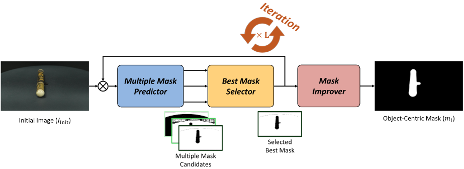
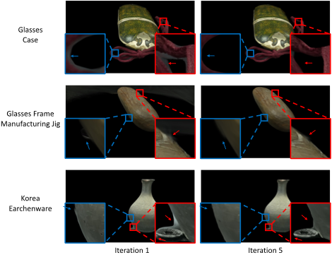
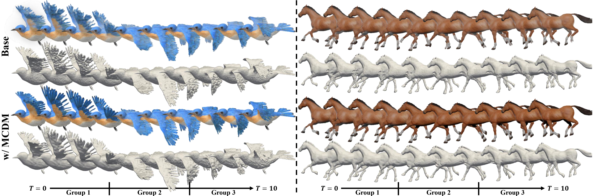
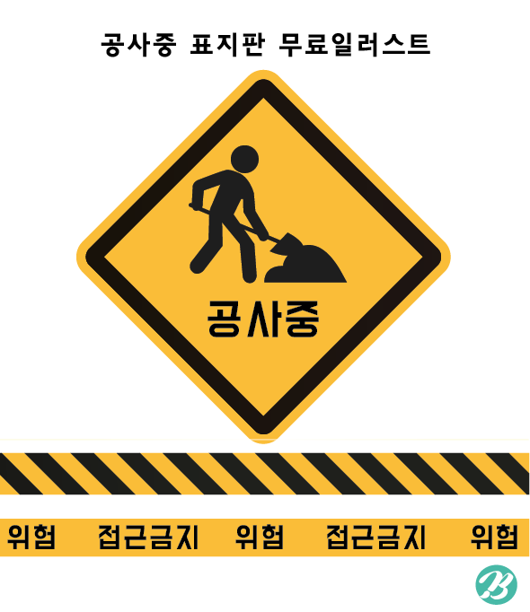

High-fidelity 3D reconstruction is essential for the preservation, restoration, and digital archiving of cultural asset. However, state-of-the-art methods like Neural Radiance Fields (NeRF) and 3D Gaussian Splatting (3DGS) are sensitive to background elements, which can degrade the quality of the results. This challenge is particularly pronounced for cultural assets with intricate patterns and material properties, where inaccurate background segmentation can lead to significant artifacts. This research aims to systematically analyze the impact of background segmentation precision on the quality of 3D reconstruction. To this end, we developed an Iterative Segmentation technique to generate masks of varying accuracy by progressively refining them. By applying these intermediate masks to 3DGS reconstruction at each step, we quantitatively demonstrate the overall improvement in reconstruction quality (measured by PSNR and SSIM) as segmentation accuracy increases. Furthermore, using the final refined mask as a baseline, we conduct a controlled study to compare the distinct effects of intentional “under-segmentation” (background leakage) and “over-segmentation” (object erosion) errors on the geometric and photometric fidelity of the 3D model. Our work provides a quantitative analysis of how different segmentation error types affect the reconstruction of cultural assets, underscoring the critical need for precise foreground isolation to achieve high-fidelity results.
Each video shows our reconstructed dynamic scene (Gaussian rendering + mesh) across time.
Girlwalk
Hook
Jumping Jacks
Stand Up
Drag the divider left or right to compare our method with DG-Mesh.
Horse
Beagle
Bird
Drag to rotate · Scroll to zoom · Right-drag to pan
Bird
drag / scroll / right-drag
Duck
drag / scroll / right-drag
T-Rex
drag / scroll / right-drag

Overview of our iterative mask refinement method. First, we predict the candidate masks that could be the mask. Second, we select the mask with the highest probability of being an object among the candidate masks. We repeat the first and second steps, and finally, we refine the best mask obtained through this iteration into an object-centric mask.

Ablation of iteration count (1 vs 5) on Glass Case, Glasses Frame Manufacturing Jig, and Korea Earthenware: progressive suppression of background noise and finer surface recovery.


@article{TODO,
author = {TODO},
title = {TOCAD},
journal = {TODO},
year = {2026}
}